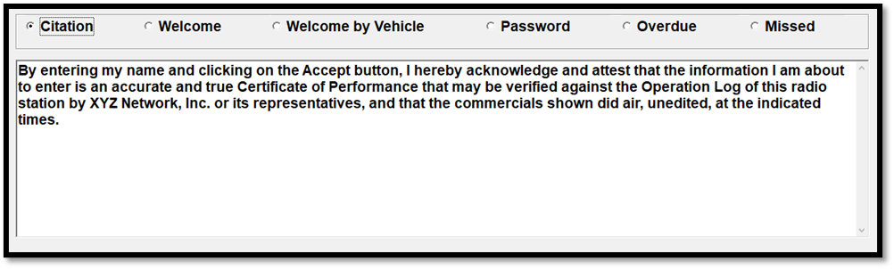
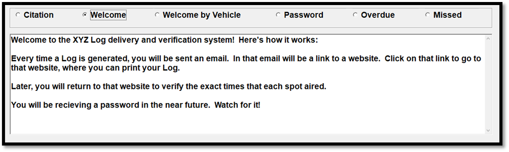
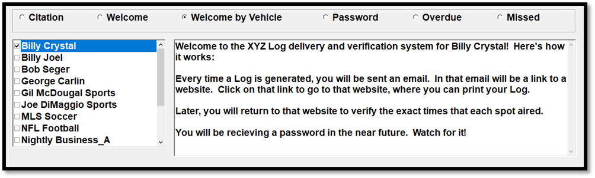
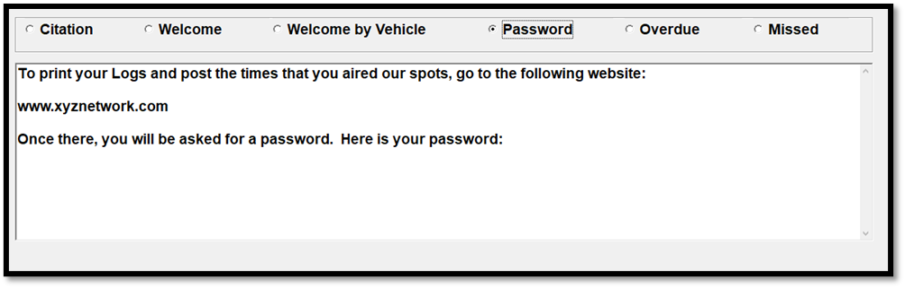
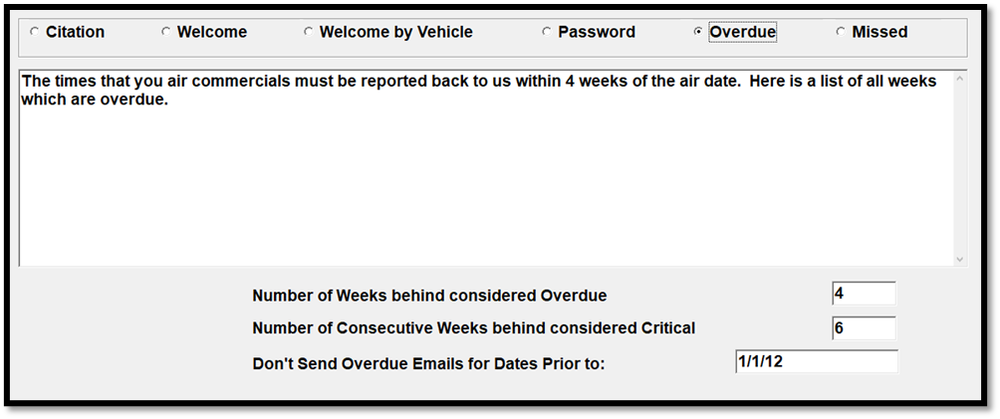
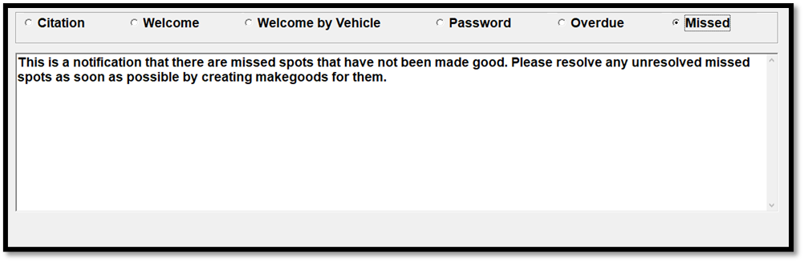

Messages Tab
The Messages tab is where you enter the boilerplate text used by the Counterpoint Affidavit system.
There are six types available: Citation, Welcome, Welcome by Vehicle, Password, Overdue, and Missed.
Note: when entering text on the Emails by Vehicle screen for Welcome, Welcome by Vehicle, Password, Overdue, and Missed, the text can also be saved so that it overwrites the text stored in Site Options.
Citation
The Citation text is the standardized wording that your affiliates must agree to before they can post their affidavits on the Counterpoint Affidavit System. By entering their names and clicking “I Agree” to the Citation, an electronic signature is created. Starting with version 8.1, if web version 3 is used, then the Citation section is not shown in Affiliate Site options, as the Citation text is now configured on the Network Admin page.

Welcome
The text in the Welcome field can be sent to new affiliates from the Emails by Vehicle screen. The purpose of the Welcome Email is to explain how to access logs and post affidavits.

Welcome by Vehicle
The Welcome by Vehicle feature makes it possible to send “Welcome emails” with saved custom text for each vehicle.

To enter custom “welcome email” text for a vehicle:
- Select a vehicle on the left side of the screen by checking the checkbox next to the vehicle name.
- Enter the custom text for that vehicle in the box on the right side of the screen by typing the text into the text field.
- Press Save when finished entering all the text.
Each vehicle can have different “welcome email” text defined.
If there’s no custom “welcome by vehicle” email text defined for a vehicle when the “welcome by vehicle” email gets sent, the non-vehicle specific “welcome” text will be sent instead.
Password
The Password wording will appear in the new password email sent out to affiliates from the Email by Vehicle screen. The actual password will be automatically inserted into the correct place within the email. Starting with version 8.1, if web version 3 is used, then this option is not shown, as web version 3 requires individual passwords for each station user, rather than a single password per station, and management of user account passwords is handled through the Counterpoint Affidavit system.

Overdue
The overdue section has two purposes. The text area is used to enter the standardized text for the overdue email that can be sent from the Emails by Vehicle screen.

The second part of the screen has the following settings:
- Number of weeks behind considered overdue: This is the number of weeks considered to be a reasonable amount of weeks for the station to return an affidavit, measuring from the time the week aired. The system will compare outstanding affidavits against the value in this field when running the Overdue Affidavits Report. When sending out Overdue Emails, all unreported weeks that exceed this Overdue limit will be automatically listed on the email with links to facilitate posting.
- Number of consecutive weeks behind considered critical: The number of weeks late in which an overdue affidavit is considered critically overdue. An agreement with a critically overdue affidavit will be flagged as critically overdue when running the Critically Overdue report with default values. Once flagged as critically overdue, the agreement can only be manually set back to not being critically overdue by setting the “critically overdue” setting on the Agreement screen Main tab to “No”.
- Don’t send overdue emails for dates prior to: If there is a value defined here, the system will not consider any affidavits prior to that date when creating overdue emails.
Missed
The Missed section is for defining the text that will be sent to stations with unresolved missed spots, as a reminder to resolve the missed spots by making them good. An unresolved missed spot is a spot that was missed and not made good (or turned into a bypassed makegood) on a web version 2 station, when web makegoods are allowed in Affiliate Site Options, for a vehicle that allows web makegoods. (Version 7.1 and above only, for web version 2 stations only.)
